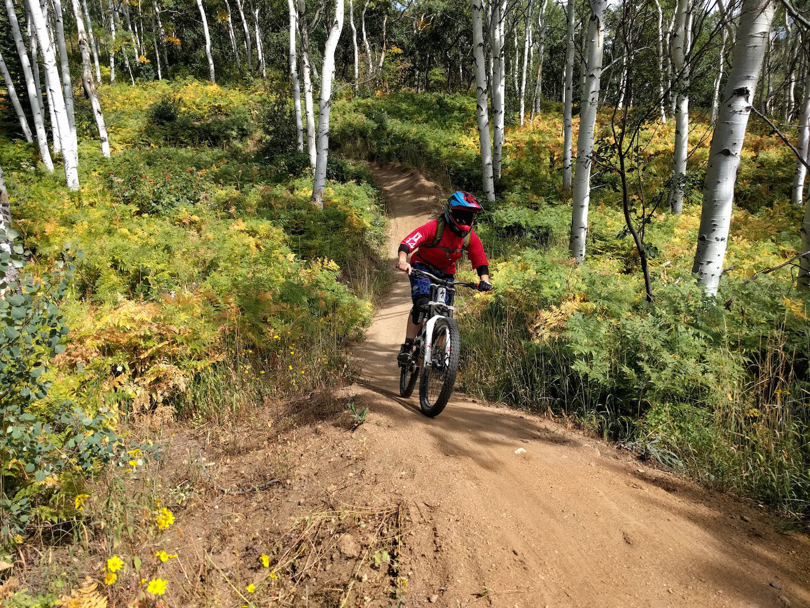
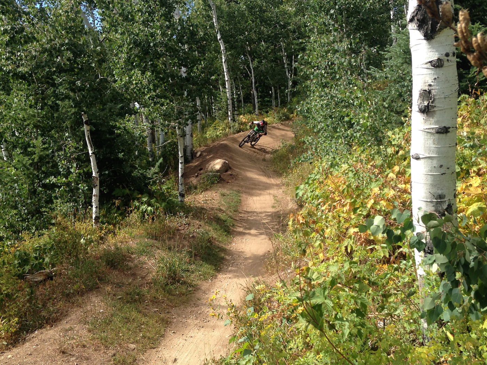
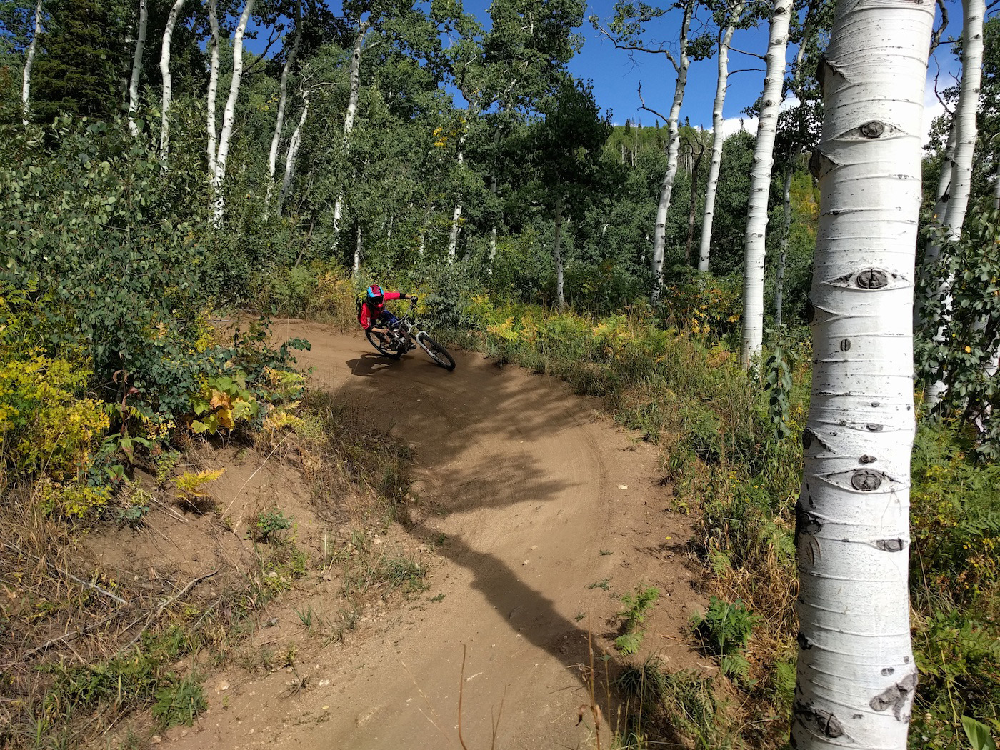
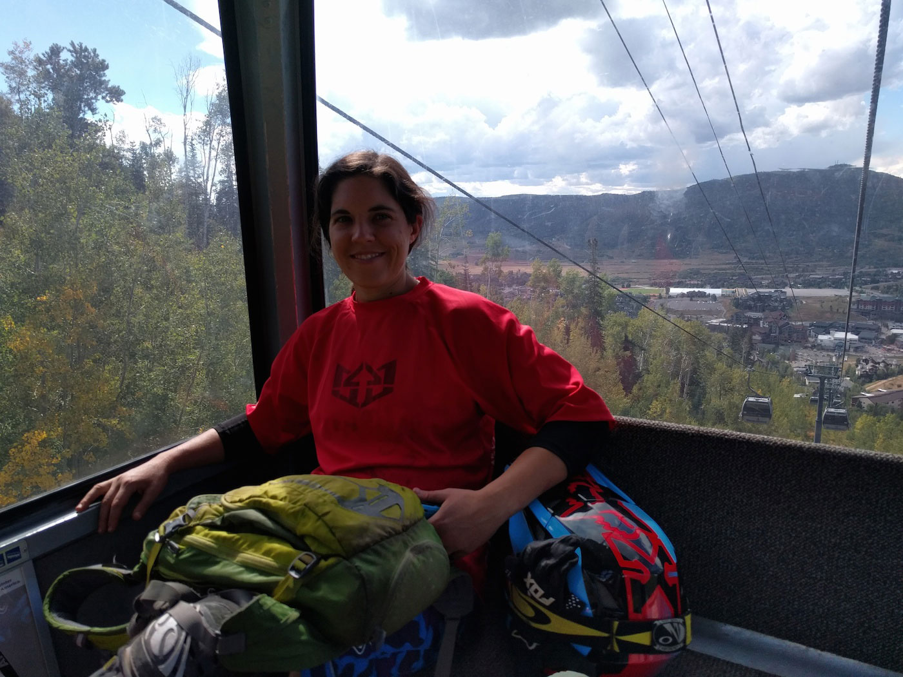
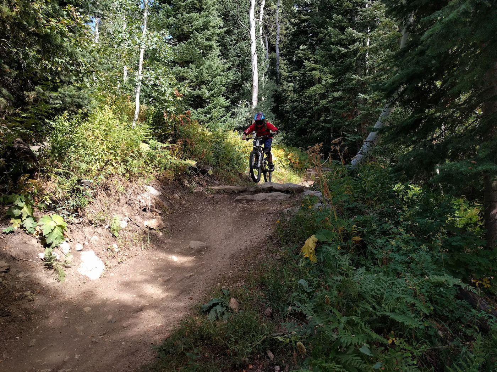

Manitou Springs
The van fully loaded with everything we need to ride bikes, eat, and sleep for 30 days.
A good friend, Micah, built our sleeping platform #MissYouMicah
Steamboat Springs Bike Park
Our first night we camped in the Muddy Creek trailhead lot near Rabbit Ears Pass. It was cold, gloomy, foggy and rainy all night and into the morning, but luckily the clouds burned off during the drive into Steamboat Springs.
S turns from the gondola. With the rain overnight, the bike park trails were tacky and about as good they get.



Steamboat has lots of aspens and lots of berms

Gondala and sauna in one. The cool temps from the morning did not stick around.

The trails were mostly smooth but there were some small rocky sections here and there
Steamboat was a blast. Now, on to Deer Valley tomorrow for more shredding…